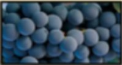

Variedades de uva de mayor importancia en el Valle de Colchagua
Debido a las excepcionales condiciones climaticas que posee el Valle de Colchagua, la adaptacion de la mayoria de las variedades finas de uva vinifera, es optima, especialmente, las que requieren un ciclo de madurez largo.
A diferencia de otras zonas vitivinicolas de Chile, en el Valle de Colchagua se
cultivan exclusivamente variedades finas, principalmente originarias de la zona de
Bordeaux, Francia, las que fueron introducidas a fines del siglo XIX, previo al gran
ataque de la filoxera en Europa.
Las principales variedades cultivadas en Colchagua son:

Variedades de Tintas
- Cabernet Sauvignon
- Merlot
- Carmenere
- Syrah
- Malbec
- Cabernet Franc
- Chardonnay
- Semillón
- Sauvignon Blanca
- Viognier